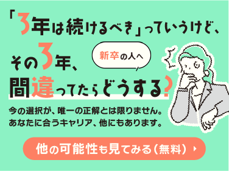
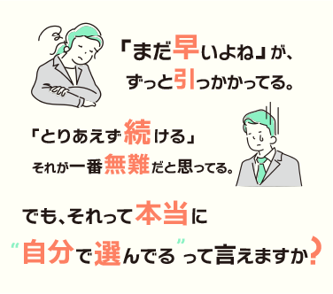
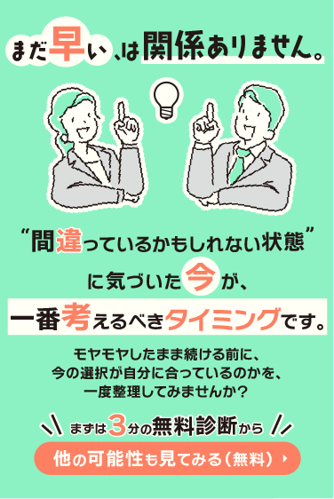
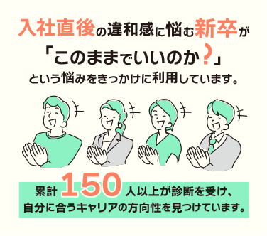
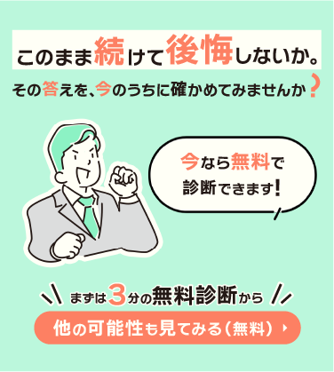

「3年は続けるべき」っていうけど、その3年、間違ってたらどうする？
今の選択が、唯一の正解とは限りません。 あなたに合うキャリア、他にもあります。

まだ早いよねが、ずっと引っかかっているあなたへ
とりあえず続けることが一番無難だと思っていても、 それが本当に自分で選んでいる道なのか、一度立ち止まって考えることも大切です。

まだ早い、は関係ありません
間違っているかもしれない状態に気づいた今が、 一番考えるべきタイミングです。

入社直後の違和感に悩む新卒が利用しています
累計150人以上が診断を受け、自分に合うキャリアの方向性を見つけています。

このまま続けて後悔しないか
その答えを、今のうちに確かめてみませんか。 今なら無料で診断できます。
